Nuclear
Energy Futures
A cinematic foresight brief on the trajectory of fission and fusion to 2050 — from horizon signals to preferred futures and strategic pathways.
The Return That
Finally Means Something
Authored by Kartik Nariya
Nuclear energy has been "about to come back" for so long that the phrase stopped meaning anything. This time, there are specific signals worth paying attention to.
Four stand out from the horizon scan. Advanced reactor designs are being engineered to convert spent fuel into industrial materials and medical isotopes rather than bury it — reframing the waste problem that has defined nuclear's public reputation for decades. A new laser enrichment facility in Kentucky signals that domestic fuel security is becoming a serious policy priority, not just a talking point. Hyperscale data centers are now building their own gigawatt-scale generation to skip grid interconnection queues entirely, which is quietly dissolving the line between energy consumer and producer. And a startup called Deep Fission has begun drilling pilot sites for reactors placed a mile underground, opening siting options that simply didn't exist before.
The scenario matrix was built around two questions that will determine where nuclear actually lands by 2050: how fast does the technology mature, and does control of energy infrastructure end up concentrated or distributed? Those axes produce four scenarios: Static Grid (stalled tech, fossil-dominated), Powerhouse Era (breakthroughs, but controlled by a handful of major actors), Fragmented Patchwork (no breakthroughs, inequality deepens), and Decentralized Boom (breakthroughs enabling community-scale energy systems).
The preferred future sits between Powerhouse Era and Decentralized Boom. Advanced fission, bridging to fusion, provides the reliable baseload that variable renewables need to work at scale. The goal is not to concentrate that capacity in a few state actors but to make it broadly accessible — including to the regions left out of every previous energy transition.
Three things have to move in parallel. Licensing frameworks need to stop treating new reactor designs like they're 1970s light-water reactors. Investment has to reach the full supply chain, including circular fuel processing. And allied governments need to coordinate on enrichment and fuel sharing before geopolitical friction makes it harder.
Signals of Change
in the Nuclear Sector
Authored by Sam Levy
Four signals — specific, evidence-based indicators that something is shifting — classified by STEEP category and Three Horizons framework.
Nuclear Waste as a Value Stream
Advanced reactor developers are promoting molten salt designs that incorporate waste-processing systems, such as the CELEX process, to convert nuclear waste into usable industrial products like isotopes and rare earth elements. This reframes the nuclear fuel cycle from a disposal-centric challenge to a circular, materials-recovery platform, potentially lowering economic barriers to nuclear expansion.
The potential for this circular model extends far beyond simple economic optimization, as it reshapes the broader legitimacy of nuclear power in the public eye. By transforming long-lived radioactive waste into a resource, developers can effectively mitigate "not-in-my-backyard" (NIMBY) opposition that often stalls repository projects by reducing the volume and radiotoxicity of material requiring permanent geological storage. Furthermore, this paradigm shift positions nuclear firms as integral partners in the global supply chain for critical minerals and medical isotopes, thereby aligning their growth with broader societal goals like industrial decarbonization and resilient healthcare infrastructure.
Laser Enrichment as Strategic Infrastructure
The announcement of the Paducah Laser Enrichment Facility in Kentucky highlights a shift toward prioritizing domestic or allied control of uranium enrichment and conversion processes to secure long-term fuel supply chains. This signal demonstrates a transition where fuel-processing capacity is becoming a central component of national geopolitical and energy security strategies.
This strategic emphasis on domestic enrichment also functions as a necessary safeguard against the supply chain vulnerabilities inherent in relying on rival-controlled fuel markets. By anchoring these capabilities within local manufacturing regions, governments can leverage nuclear infrastructure to foster significant regional job growth while simultaneously building the reliable, scalable fuel supply required to power the next generation of advanced reactor fleets.
Data-Center Developers Bypassing the Grid
Hyperscale computing and AI firms are increasingly moving toward developing "captive generation" on-site — such as the 1.5 gigawatt power plant deployment in Utah — to avoid the slow timelines and bottlenecks of traditional public-grid connections. This emergence erodes the historical boundary between power consumers and producers, potentially accelerating deployment but risking the fragmentation of grid planning.
As these hyperscalers solidify their role as independent power producers, the traditional utility model faces an urgent competitive challenge that threatens to redirect investment capital away from public grid modernization. This pivot could lead to a two-tiered energy landscape where well-funded data hubs operate with high-reliability, dedicated nuclear or gas baseloads, while the public grid is left to manage rising costs and diminishing utility support. Consequently, regulators must now grapple with the risk of systemic inefficiency, as private "grid-light" strategies may complicate the long-term coordination required to ensure universal energy stability and decarbonization.
Underground Reactor Field Testing
Deep Fission has commenced drilling the first data-acquisition well for a pilot project that places small modular pressurized-water reactors roughly one mile underground. This signals a fundamental shift in thinking about where reactors are physically sited, potentially redefining safety and security assumptions while opening new deployment possibilities for remote industrial applications.
Ultimately, this trend signals a future where infrastructure deployment is dictated by the speed of digital innovation rather than the pace of bureaucratic public planning. As a result, the "one grid, one power model" may increasingly give way to specialized, fragmented energy architectures designed to serve specific high-demand clusters.
Futures Triangle
Authored by Makaiah Gorham
⬤ Weight of History
The nuclear sector carries an unusually heavy legacy burden. The accidents at Chernobyl (1986) and Fukushima (2011) permanently restructured public trust and produced waves of legislative phase-outs across Europe and beyond. Regulatory frameworks — still built largely around 1970s light-water reactor assumptions — impose cost structures that make new builds economically uncompetitive even when the underlying physics is sound. High-profile construction cost overruns (Vogtle, Hinkley Point C) reinforce the perception that nuclear is inherently expensive, even though these reflect project management and regulatory risk rather than fundamental technology limits. Radioactive waste remains politically unresolved in most countries. These path dependencies are real constraints, not merely perceptions.
⬤ Push of the Present
Several concurrent disruptions are pushing energy systems toward nuclear more forcefully than at any point since the 1970s. AI data centers — representing a step-change in electricity demand — are actively contracting for nuclear capacity (Microsoft–Three Mile Island, Google–Kairos). Geopolitical supply shocks from Russia's 2022 invasion of Ukraine prompted European states to reverse planned phase-outs and accelerate new builds. Grid interconnection queues in the United States now extend beyond a decade for new generation, forcing hyperscalers like Crusoe Energy to develop gigawatt-scale captive generation. Climate decarbonization targets that seemed achievable with solar and wind are increasingly constrained by land use, transmission costs, and the intermittency problem — all of which nuclear is uniquely positioned to address.
⬤ Pull of the Future
Nuclear energy's aspirational pull rests on physics advantages that no other zero-carbon technology can replicate. Energy density: a single uranium fuel pellet the size of a fingertip contains as much energy as 17,000 cubic feet of natural gas. Land efficiency: nuclear requires roughly 100× less land than equivalent solar capacity, an advantage that will compound as arable and ecologically sensitive land becomes contested. And on the long horizon, fusion — both magnetic confinement (ITER, Commonwealth Fusion Systems) and inertial confinement approaches — represents a genuine step-change if commercial timelines compress toward the 2040s. SMRs and microreactors are pulling forward a deployment model that can serve remote industrial sites, island grids, and developing economies that large-scale nuclear could never reach.
The triangle reveals a productive structural tension: the sector's past is its biggest drag, but its physics is its most compelling advantage. The tension between these poles is not static — the push of the present is actively eroding the weight of history in ways that were not true five years ago. This is what makes 2025–2035 a decisive window for strategic intervention.
Four Futures for
Nuclear to 2050
Authored by Natalee Ward & Valorie Cavazos
Part 1 — Critical Uncertainties
This scenario matrix is structured around two critical uncertainties that will shape global energy systems over the next 20 to 30 years. The first is the rate of technological advancement in nuclear energy systems, which ranges from accelerated breakthrough to constrained development. The second is the governance structure of energy systems, which ranges from centralized to distributed architectures.
A critical uncertainty is defined as a driver that is both highly impactful and genuinely unpredictable in its outcome. The trajectory of nuclear energy technology clearly meets this definition. Signals from the horizon scan point to this momentum directly — the move toward underground reactor siting by Deep Fission and the commercialization of waste-to-value processes like the CELEX system both suggest that nuclear innovation is expanding beyond conventional reactor design into entirely new deployment and fuel-cycle models. Whether these developments reach commercial scale or stall in regulatory and financing bottlenecks remains genuinely uncertain.
The second uncertainty focuses on how energy systems are structured and governed. Centralized systems are built around large utilities, national grids, and major infrastructure projects. Distributed systems rely on microgrids, local generation, and prosumer networks. Alpha Tech's transportable modular reactor points toward distributed nuclear power. The Paducah enrichment facility and state-level nuclear planning roadmaps point toward centralized control. Whether nuclear scales as a centralized or distributed technology is one of the defining open questions of the coming decades.
These two uncertainties are independent but deeply interconnected in their implications. Technological breakthroughs can support either centralized or distributed systems. Likewise, technological constraints can reinforce legacy centralized systems or lead to fragmented, localized solutions. Together, these axes create four distinct and plausible futures that challenge common assumptions about how the energy transition will unfold.
Part 2 — Scenario Matrix
Part 3 — Scenario Narratives · 2050
Static Grid
It is 2048, and the global energy system still looks surprisingly familiar. Centralized power plants dominate electricity generation, and most countries remain dependent on large-scale fossil fuel infrastructure. Coal and natural gas continue to supply over 65 percent of global electricity, largely because technological progress in clean energy never scaled as expected.
Breakthroughs in battery storage, advanced nuclear, and grid modernization were slower than anticipated. Many renewable projects remained stuck in interconnection queues for years, and transmission expansion failed to keep pace with demand growth. As a result, renewables never moved beyond a supplementary role. Rooftop solar adoption reached roughly 8 percent of households globally, but it was not enough to shift the overall system.
AI data centers, electrified transport, and cooling demand in warming climates placed constant pressure on aging infrastructure. Grid congestion became a defining feature. In major cities, rolling blackouts occur during peak summer months. In the United States, industrial users are capped during peak hours, while residential consumers face tiered pricing that prioritizes wealthier communities. The system is stable in structure but deeply unequal in outcomes.
Powerhouse Era
By 2048, the world runs on clean electricity, but control over that system is highly concentrated. Rapid technological breakthroughs in energy storage, advanced nuclear, and grid infrastructure have transformed the global energy landscape. Renewables and clean electricity account for more than 85 percent of global generation.
Governments and large corporations led the transition, investing heavily in large-scale infrastructure. In China, a continental supergrid connects vast solar and wind installations to urban and industrial centers. The European Union operates an integrated grid system that coordinates energy flows across member states, while the United States has significantly expanded its transmission backbone to support national electrification.
The economics of scale drove this outcome. A small number of governments and corporations control the majority of generation and distribution infrastructure. Smaller nations and developing regions participate primarily as energy importers. While emissions have decreased and energy supply is more stable, the concentration of power raises new questions about equity and access.
Fragmented Patchwork
In this future, the global energy transition stalled before it could take hold. Technological progress slowed, and international cooperation broke down. What emerged is a fragmented system where energy access and reliability vary dramatically across regions.
By 2048, no dominant energy model has emerged. Some communities rely on small-scale solar systems, others depend on diesel generators, and many operate a mix of inconsistent solutions. In Sub-Saharan Africa, urban neighborhoods may have access to microgrids, while adjacent areas rely on fuel-based backup systems that operate only part of the day.
Without major technological breakthroughs, clean energy never reached the cost levels needed for universal adoption. Fossil fuels remain in use, not by preference but by necessity. Supply chains for critical minerals have become a major point of conflict. This world is defined by inequality — energy access depends heavily on geography, income, and political stability.
Decentralized Boom
In 2048, energy is produced and managed at the local level. Technological breakthroughs made clean energy systems affordable and scalable, and instead of reinforcing centralized infrastructure, they enabled widespread decentralization.
Solar panels, small-scale wind systems, and advanced battery storage are now standard features of homes and communities. More than 60 percent of households globally participate in some form of distributed generation. Local microgrids manage energy production and storage, often using AI systems to balance supply and demand in real time.
In Kenya, rural electrification accelerated rapidly once decentralized systems became more cost-effective than grid expansion. Community energy cooperatives now manage local grids and trade surplus electricity through regional platforms. This transition has increased resilience — power outages are less widespread because failures are contained within smaller systems. The system is more flexible and responsive, but depends heavily on effective governance at both local and global levels.
Nuclear as the
Strategic Backbone
Authored by Tendai Govo

Among the four scenarios mapped in this futures matrix, our group identifies a hybrid of the Powerhouse Era and Decentralized Boom as the most desirable future — one in which advanced nuclear energy, specifically fission bridging to fusion, serves as the technological backbone of a just, resilient, and globally coordinated energy system.
This preferred future draws on the technological momentum of breakthrough scenarios while deliberately steering governance structures away from the dangerous concentration of power inherent in a purely centralized model. It is a future that is not simply discovered by chance but actively constructed through aligned policy, investment, and international commitment.
Nuclear energy — both advanced fission and the emerging frontier of fusion — occupies a unique position in any credible preferred future. Unlike solar and wind, nuclear provides dispatchable, high-density baseload power that does not fluctuate with weather patterns. In a world of rising electricity demand driven by AI data centers, electrified transport, and industrial decarbonization, this characteristic is not a luxury but a requirement.
Signals identified in the horizon scan reinforce this case. The emergence of underground SMRs, the advance of molten salt designs capable of converting nuclear waste into value streams, and hyperscalers' demand for captive gigawatt-scale generation all point toward nuclear as a near-term commercial reality rather than a speculative promise.
Three Moves to
Get There by 2050
Strategic Pathway: Policy Reform
The most significant barrier to realizing this preferred future is not technological — it is regulatory. Decades of slow, fragmented permitting processes have made nuclear development economically uncompetitive relative to its actual risk profile. In our preferred future, governments adopt streamlined, risk-informed licensing frameworks that treat advanced reactor designs on their merits rather than through the lens of legacy light-water reactor assumptions. The United States' investment in domestic laser enrichment infrastructure, as signaled by the Paducah facility, points toward a new era of nuclear fuel sovereignty that policy must accelerate and protect.
Equally important is land-use and siting policy. The development of deep underground SMRs by firms like Deep Fission demonstrates that physical constraints on reactor placement are becoming tractable, opening siting options previously unavailable. Governments should enact enabling legislation that facilitates these novel configurations while updating safety standards to reflect empirical performance data rather than political risk aversion. Public investment in long-duration workforce development pipelines — nuclear engineers, health physicists, and skilled tradespeople — must accompany licensing reform to ensure deployment capacity matches regulatory opportunity.
Strategic Pathway: Technology Investment
Reaching the preferred future requires sustained, patient capital directed at the full nuclear value chain. Public and private actors must co-invest in advanced reactor demonstration projects that move beyond pilot scale toward commercial replication. Fusion programs — including both magnetic confinement and inertial confinement approaches — require increased funding stability to compress development timelines. Critically, investment must extend to the enabling infrastructure: advanced fuel fabrication, waste reprocessing technologies such as the CELEX molten salt process, and grid interconnection systems capable of integrating variable renewables alongside firm nuclear capacity.
The circular nuclear fuel cycle represents one of the most strategically undervalued opportunities in this space. By repositioning spent fuel as a feedstock for isotope production and rare earth recovery, nuclear operators can dramatically improve project economics, reduce long-term waste liabilities, and align themselves with the critical mineral supply chains that advanced manufacturing, healthcare, and defense sectors depend on. Technology investment in this area is not peripheral to the nuclear case; it is central to its political and economic sustainability.
Strategic Pathway: International Cooperation
No nation can fully realize this preferred future alone. Advanced nuclear development requires global supply chains for specialized materials, shared standards for reactor safety, and multilateral frameworks for managing proliferation risk. In our preferred future, allied nations coordinate on fuel cycle governance — sharing enrichment capacity and spent fuel management infrastructure across trustworthy partners — to reduce dependence on adversarial suppliers and lower barriers for smaller nations to access civilian nuclear power. This mirrors the logic behind the Paducah laser enrichment signal: energy security is geopolitical security, and nuclear fuel sovereignty must be treated as a shared allied interest.
International organizations — including the International Atomic Energy Agency and emerging multilateral bodies — must be empowered and resourced to facilitate technology transfer to developing economies. The risk identified in the Fragmented Patchwork scenario, that energy poverty persists as a function of technological exclusion, is most effectively countered when nuclear knowledge and financing flows to regions that need it most. A preferred future that delivers clean, reliable baseload power to Sub-Saharan Africa, South and Southeast Asia, and Latin America through adapted SMR deployments is not utopian; it is a reachable horizon if international cooperation frameworks are built now.
Strategic Implications
Authored by Jacky Chen
This foresight exercise makes one thing clear above all others: nuclear energy's trajectory is not determined by physics. It is determined by decisions — regulatory, financial, and diplomatic — that are being made right now, in this decade.
The four scenarios mapped in this portfolio are not equally likely by default. They are differently likely depending on choices that specific actors make in the next ten years. The Static Grid materializes if regulatory reform stalls and capital keeps flowing to incumbent fossil infrastructure. The Fragmented Patchwork emerges if technological development is allowed to remain the exclusive domain of wealthy states while the rest of the world is locked into imported dependency. The Powerhouse Era arrives if breakthrough technology is captured by a small set of national and corporate actors without corresponding governance structures to ensure broad access. And the Decentralized Boom — the preferred future this analysis points toward — requires deliberate, coordinated action to make it real.
The horizon signals analyzed in this portfolio are not predictions of that preferred future. They are early indicators that its prerequisites are becoming technically and economically tractable. Advanced reactor designs capable of converting nuclear waste into industrial value streams address nuclear's most persistent political liability. Domestic enrichment infrastructure reduces the geopolitical chokepoints that have historically constrained nuclear expansion. Underground SMR deployment opens siting possibilities that make nuclear feasible at scales and in locations previously unavailable. Each of these signals represents a decision point, not a certainty. Acting on them requires institutional will that is currently unevenly distributed across governments and firms.
The most important action the preferred future demands is this: nuclear's advocates, its regulators, and its financiers must treat the next ten years as a deployment window, not a development window. The technology is mature enough to act. The demand signals — from AI infrastructure, from grid decarbonization mandates, from energy security imperatives — are converging in ways that create genuine commercial pull for the first time in decades. The Futures Triangle's push of the present is, in 2025, unusually strong. That push will not remain as strong indefinitely. The window in which it can be converted into durable structural change is open now. Closing it requires policy urgency, investment discipline, and international coordination at a level commensurate with the scale of the transition that the preferred future demands.
Sources
- Global Laser Enrichment. (2026, March 26). Business — Global Laser Enrichment. GLE. https://www.gle-us.com/business/
- Data Center Knowledge. (2025, April 30). Data Centers Bypassing the Grid to Obtain the Power They Need. datacenterknowledge.com
- Thomas, M. (2026, January 26). Data Centers Build Own Power Plants to Avoid Grid Delays. LinkedIn. linkedin.com
- Deep Fission. (2025). Deep Fission: Underground Nuclear Reactor Technology. deepfission.com
- Institute for Energy and Environmental Research. (n.d.). Table of Nuclear Reactor Accidents. ieer.org
- Campaign for Nuclear Disarmament. (n.d.). Why We Oppose Nuclear Power. cnduk.org
- Shellenberger, M. (2019, February 14). The Real Reason They Hate Nuclear. Forbes. forbes.com
- Nuclear Energy Institute. (2015). Land Needs for Wind, Solar Dwarf Nuclear Plants. nei.org
- International Energy Agency. (2023). World Energy Outlook 2023. IEA.
- International Renewable Energy Agency. (2023). World Energy Transitions Outlook 2023. IRENA.
- World Nuclear Association. (2024). Small Modular Reactors. world-nuclear.org
- Commonwealth Fusion Systems. (2024). SPARC and ARC Fusion Reactor Program. cfs.energy
- U.S. Department of Energy. (2023). Pathways to Commercial Liftoff: Advanced Nuclear. DOE.
- Inman, M. (2013). Nuclear power: The dream of a decade. Nature, 502(7471), 266–268.
- Lovering, J. R., Yip, A., & Nordhaus, T. (2016). Historical construction costs of global nuclear power reactors. Energy Policy, 91, 371–382.
- IAEA. (2022). Nuclear Power and the Clean Energy Transition. International Atomic Energy Agency.
- Inhofe, J., & Booker, C. (2019). Nuclear Energy Leadership Act. U.S. Senate. S. 903, 116th Congress.